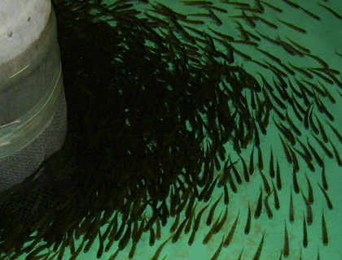

Improving Strategies to Restore Aquatic Habitats and Species
Template #72

The USGS is taking an innovative approach to restoration, simultaneously restoring native fish species at two different food web levels in Lake Ontario. Historically, the Lake Ontario population of Atlantic salmon represented the largest freshwater population of salmon in the world. Overfishing and loss of spawning habitat has since led to their extirpation. Two deepwater whitefishes, deepwater cisco (also known as bloater; Coregonus hoyi) and lake herring (C. artedi), have also experienced dramatic declines in Lake Ontario due to effects of invasive species, such as alewife (Alosa pseudoharengus) and rainbow smelt (Osmerus mordox). This GLRI project is focused on restoring Atlantic salmon, deepwater cisco, and lake herring in Lake Ontario and the St. Lawrence River, marking a first-of-its-kind effort in the region. This project is the critical first step in restoring a resilient native fish community in Lake Ontario, strengthening both the local ecosystem and local economy.
The first objective of this project is to restore Atlantic salmon in Lake Ontario and the St. Lawrence River through development of new and innovative restoration techniques and evaluation of multiple salmon strains to determine their suitability for restoration. A primary focus of Atlantic salmon restoration is to evaluate survival of new strains of salmon stocked into Lake Ontario. As part of this project, the Sebago strain is being stocked into the lake and other strains are being considered for use based on life history characteristics and egg availability. This approach includes acquisition of Atlantic salmon eggs, rearing of salmon to various life stages (fry, fingerlings, smolts), marking, and post-stocking evaluation. The UV treatment facility at the USGS Tunison Laboratory of Aquatic Science has allowed researchers to acquire and rear Atlantic salmon eggs collected from the wild without risk of disease transfer, such as viral hemorrhagic septicemia (VHS). Scientists have identified salmon release locations with the highest probability for success of capturing returning adult salmon, a critical part of establishing a Lake Ontario egg source to perpetuate the project. The first releases of Atlantic salmon into Lake Ontario have already occurred, with additional releases planned in the near future.
The second objective of this project is to restore deepwater cisco and lake herring in Lake Ontario through development of new and innovative restoration techniques and evaluation of the suitability of historic spawning sites. Deepwater cisco and lake herring were once among the most abundant fish in Lake Ontario, serving as important prey for native salmon and lake trout, and supporting commercial fisheries. Lake Ontario populations of deepwater cisco and lake herring declined by the mid-1900s due to invasive species, and deepwater cisco went extinct from the lake by the 1970s, although populations still persisted in the upper Great Lakes (lakes Superior, Michigan, and Huron). Restoration of deepwater cisco and lake herring in Lake Ontario has previously been hampered by an inability to obtain eggs from the upper Great Lakes for reintroduction into Lake Ontario, due to the lack of an isolation facility for rearing the eggs. The new UV treatment facility at the USGS Tunison Laboratory of Aquatic Science now allows researchers to overcome this obstacle. Deepwater cisco and lake herring eggs from stocks in the upper Great Lakes were acquired at the start of this project, and the first releases of these important native fishes into Lake Ontario have already occurred. All stocked fish were marked with an elastomer dye, which allows researchers to evaluate post-stocking success. Restoration of lake herring is also focusing on current suitability and enhancement potential of historic spawning grounds.
Restoration of Atlantic salmon, deepwater cisco, and lake herring will require, at least for the short-term (10-20 years), stocking of hatchery-raised fish, which entails a cooperative, international effort among federal, state, and provincial agencies. Through GLRI funding, a new UV treatment facility was constructed at the USGS Tunison Laboratory of Aquatic Science, providing state-of-the-art capabilities for holding wild-captured eggs and raising fish for release. Reintroduction of Atlantic salmon will provide greater fishing opportunities in Lake Ontario and restore the natural balance of the Lake Ontario food web through providing additional top predators. Reintroduction of the native prey fish species, deepwater cisco and lake herring, will increase food choices and enhance the natural recruitment potential of predator fish, including Atlantic salmon and lake trout. Restoration of native fish is also expected to mitigate previous effects of invasive species, such as alewife and rainbow smelt, and reduce opportunities for new invasive species to colonize the lake by increasing food web resistance to invasion.
Reintroduction of Atlantic salmon will provide greater fishing opportunities in Lake Ontario and restore the natural balance of the Lake Ontario food web through providing additional top predators. Reintroduction of the native prey fish species, deepwater cisco and lake herring, will increase food choices and enhance the natural recruitment potential of predator fish, including Atlantic salmon and lake trout. Restoration of native fish is also expected to mitigate previous effects of invasive species, such as alewife and rainbow smelt, and reduce opportunities for new invasive species to colonize the lake by increasing food web resistance to invasion.
The state-of-the-art isolation facility came on-line in November 2011. Approximately 138,000 fall fingerling Atlantic salmon were raised and released in Lake Ontario tributaries during fall of 2011 and 2012. Another 15,000 fall fingerling Atlantic salmon were released in St. Lawrence River tributaries during fall of 2011 and 2012 in partnership with the St. Regis Mohawk Tribe. An additional 10,000 yearling Atlantic salmon smolts were released in Lake Ontario tributaries during spring 2012.
Deepwater cisco eggs were collected in February 2012 from Lake Michigan. Approximately 1,200 fall fingerling deepwater cisco were stocked in Lake Ontario off Oswego, New York during fall of 2012. Collaborative efforts between the New York State Department of Environmental Conservation and USGS Tunison Laboratory of Aquatic Science resulted in collection of approximately 70 adult lake herring in Lake Ontario during winter of 2011-12. The USGS Tunison Lab raised and stocked approximately 10,000 fall fingerling lake herring in Lake Ontario embayments during winter of 2012-13. Post-stocking monitoring will occur to evaluate restoration success.
Dr. James H. Johnson, jhjohnson@usgs.gov 607-753-9391 ext. 30